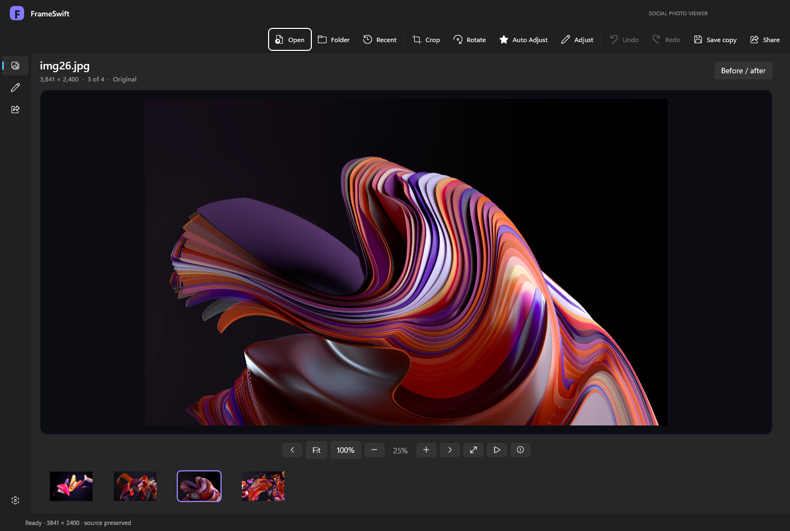
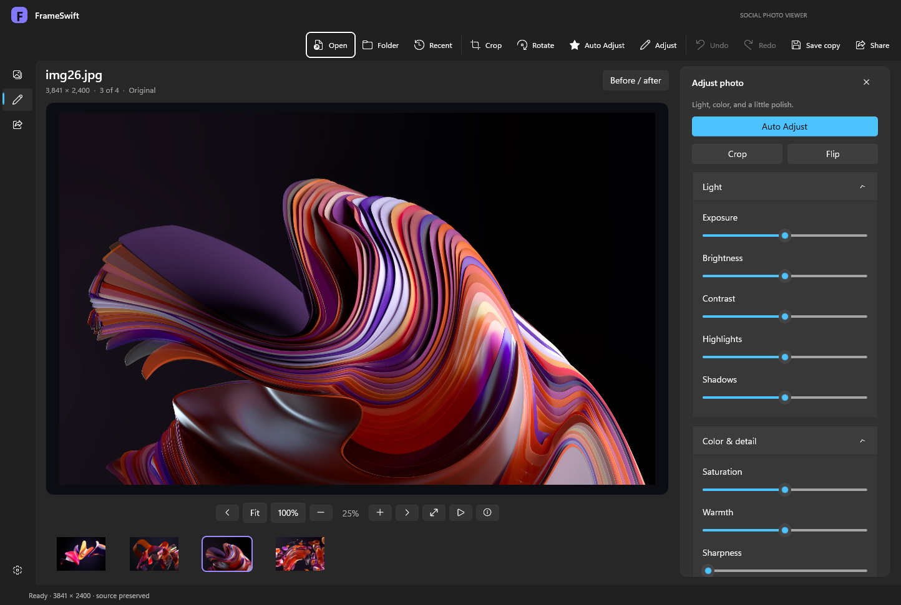

Find your flow
Arrow-key browsing, drag-and-drop, a thumbnail strip, and recent folders keep everyday viewing simple.
Give your photos the space they deserve.
View beautifully. Fine-tune effortlessly.
Share when you’re ready.
Free preview · Windows 10 / 11 · 64-bit · 85 MB

Open a photo. Browse the whole folder. Step into fullscreen. FrameSwift brings the essentials together in a photo-first workspace.
Browse a folder, jump between thumbnails, zoom to actual pixels, or let a slideshow take over.
ACTUAL APP CAPTUREArrow-key browsing, drag-and-drop, a thumbnail strip, and recent folders keep everyday viewing simple.
Fit to window, inspect at 100%, zoom and pan, or hide the interface in fullscreen.
Light and dark appearance, saved preferences, and an invitation to become your default viewer.

You shouldn’t need a separate creative suite to straighten up a photo or give it a little life.
Crop freely or use square, portrait, landscape, and story presets. Rotate and flip in a moment.
Start with a one-click tone and color adjustment. Then dial in exposure, highlights, shadows, warmth, and sharpness.
Compare before and after, undo your changes, and save a full-resolution JPEG or PNG copy.
Finish the edit, add your words, review the destination. Sharing belongs in the same flow.
Instagram and Facebook now have a guided photo handoff and prepared developer publishing integrations. Public Meta sign-in is not configured. Read the Meta setup guide ↗ · X.com includes a caption-prefilled browser handoff and a prepared API integration. X setup guide ↗
Built with WinUI 3 and hardware-accelerated image effects. Designed for a Windows desktop workflow.
No FrameSwift cloud account, analytics, or ads. Direct uploads require confirmation. Instagram developer tests additionally use a public image host you control.
FrameSwift asks on first launch. Choose Make default to open Windows Settings, or Not now to carry on.
Yes. The current FrameSwift preview is free to download and use, with no subscription, ads, or FrameSwift account required.
A 64-bit PC running Windows 10 version 2004 or later, or Windows 11. Windows 11 is the primary test platform. The installer includes the app runtimes and Microsoft’s signed Visual C++ runtime installer, used if needed.
FrameSwift asks on first launch. Choose Make default, then select FrameSwift Social Photo Viewer for your image types in Windows Default apps. You can revisit this from FrameSwift Settings. Your Windows choices are never changed without your selection.
JPEG, PNG, BMP, GIF, and TIFF are the basic formats. GIF and TIFF display the first frame or page. WebP, HEIC/HEIF, and AVIF depend on installed Windows codecs. RAW, SVG, animated playback, and multipage navigation are not included.
Edits are kept as a recipe while you work. Save copy exports a new JPEG or PNG and protects the original filename. Optional recovery can restore edits after an unexpected exit when the original source still matches.
Version 1.2.1 is an early preview. The app and installer are unsigned, so Windows may display a publisher warning. Check the release and checksum before deciding to install. Rendering, export, persistence, installation, reinstall, and uninstall checks passed; live social posting, all codecs, and every hardware configuration have not been verified. Instagram/Facebook public sign-in requires a configured Meta app, approval, and hosted services. Full-resolution operations are limited to 80 megapixels and device limits.
Remove FrameSwift from Windows Settings → Apps → Installed apps. The uninstaller removes the application and its owned registration and shortcuts. Your personal photos and saved preferences are preserved.
FrameSwift Social Photo Viewer
Free Windows preview by Prosper Technologies.
This preview is unsigned. Windows may display a publisher warning. Review the release details before installing.
e321e31efcd9bd36d3b8c6467454376c803ee5f347eb13ad1dc1a218db11e2dd